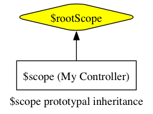
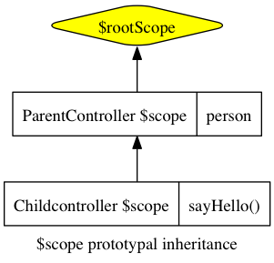
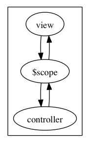

实现了内容与文本框一起改变的功能： 查看效果
代码如下：
<!doctype html>
<html ng-app>
<head>
<script src="../angular.min.js"></script>
</head>
<body>
<div>
<input type="text" ng-model="yourName" placeholder="Enter a name here">
<h1>Hello, {{yourName}}!</h1>
</div>
</body>
</html>
就这样没有任何代码就实现了内容与文本框一起改变的功能：
ng-app标记了一个模块，没有它AngularJs不会起作为。
ng-model="yourName"建立了文本框与模型yourName的双向绑定。
{{yourName}}显示模型的值。
通过实践创建一个项目myApp来学习，把js代码都放在js/radio.js中。
通过angular.module方法定义模块，
var app = angular.module('myApp', []);
这样在页面上可以声明把模块绑定到指定的DOM中：
<!doctype html>
<html ng-app="myApp">
<head>
<script src="../angular.min.js"></script>
<script src="js/radio.js"></script>
</head>
<body>
</body>
</html>
绑定的地方就是AngularJs运行应用的地方。
$scope是一个把view（一个DOM元素）连结到controller上的对象。在我们的MVC结构里，
这个$scope将成为model，它提供一个绑定到DOM元素（以及其子元素）上的excecution
context。
尽管听起来有点复杂，但$scope实际上就是一个JavaScript对象，controller和view都
可以访问它，所以我们可以利用它在两者间传递信息。在这个$scope对象里，我们既存储
数据，又存储将要运行在view上的函数。
每一个Angular应用都会有一个$rootScope。
这个$rootScope是最顶级的scope，它对应着含有ng-app指令属性的那个DOM元素。
如果页面上没有明确设定$scope，Angular就会把数据和函数都绑定到这里，第一部分中
的例子就是靠这一点成功运行的。
在这个例子里，我们将使用$rootScope。在radio.js文件里，我们给这个scope加一个
name属性。把这个函数放进app.run函数里执行，我们就保证了它能在应用的其他部分
之前被执行。你可以把app.run函数看作是Angular应用的main方法。
app.run(function($rootScope) {
$rootScope.name = "Ari Lerner";
});
现在，我们可以在view的任何地方访问这个name属性，使用模版表达式{{}}，像这样
：
{{ name }}
要真正看到scope的强大功能，让我们给一个DOM元素加上controller，它将创建这个元素的
$scope ，让我们跟这个元素互动。
要明确创建一个$scope对象，我们就要给DOM元素安上一个controller对象，使用的是
ng-controller指令属性：
<div ng-controller="MyController">
{{ person.name }}
</div>
ng-controller指令给所在的DOM元素创建了一个新的scope对象，并将这个scope对象
包含进外层DOM元素的scope对象里。在上面的例子里，这个外层DOM元素的$scope对象，
就是$rootScope对象。这个scope链是这样的：

现在，MyController给我们建立了一个可以从DOM元素内部直接访问的scope对象。下面
我们在的这个scope里创建一个person对象，在radio.js中：
app.controller('MyController', function($scope) {
$scope.person = {
name: "Ari Lerner"
};
});
现在我们可以在有ng-controller=’MyController’属性的DOM元素的任何子元素里访问
这个person对象，因为它在$scope上。
页面上显示出：
所有scope都遵循原型继承（prototypal inheritance），这意味着它们
都能访问父scope们。对任何属性和方法，如果AngularJS在当前scope上找不到，就会到父
scope上去找，如果在父scope上也没找到，就会继续向上回溯，一直到$rootScope上。
唯一的例外：有些指令属性可以选择性地创建一个独立的scope，让这个scope不继承它的 父scope们。
举个例子，假设我们有一个ParentController，含有一个person对象，又有一个
ChildController想要访问这个对象：
app.controller('ParentController', function($scope) {
$scope.person = {greeted: false};
});
app.controller('ChildController', function($scope) {
$scope.sayHello = function() {
$scope.person.greeted = true;
}
});
当我们在view里把ChildController绑定到ParentController之下，在子元素里我们
就能访问ParentController创建的父scope的属性，像访问ChildController自己的
scope中的属性一样：
<div ng-controller="ParentController">
<div ng-controller="ChildController">
<input type="text" ng-model="person.name" placeholder="Name"></input>
<a ng-click="sayHello()">Say hello</a>
</div>
{{ person }}
</div>

现在，我们把scope用在我们的NPR应用上。在上一篇结尾我们定义了app module，现在
我们开始深入DOM结构，创建基本功能。
像在上面的例子里展示过的那样，我们先创建一个root controller，命名为
PlayerController。还有一个RelatedController，它将负责管理音频DOM元素、和为
我们取回NPR节目的列表。
回到radio.js，现在我们就来创建这两个controller：
var app = angular.module('myApp', []);
app.controller('PlayerController', ['$scope', function($scope) { }]);
app.controller('RelatedController', ['$scope', function($scope) { }]);
这两个controller现在还没什么功能，那么，让我们给应用先加上点声音吧。在这个教程里 我们将使用HTML5的音频DOM元素，所以首先你得有个支持HTML5的浏览器（我们推荐Google Chrome）。
这个音频DOM元素，我们既可以把它加在HTML里，又可以加在我们的controller里。不过 鉴于我们主要使用controller跟这个音频DOM元素互动，把它创建在controller里更合适。
现在我们就在PlayerController里创建一个音频DOM元素。我们要把它储存在scope上，
然后像你已经学过的那样——通过$scope对象把view和controller连接起来。
app.controller('PlayerController', ['$scope', function($scope) {
$scope.audio = document.createElement('audio');
}]);
这个设定现在可能有点无聊，因为它还不能干什么。我们会在本系列的下一篇介绍取回（
fetching）数据，现在我们先使用一个指定的.mp4网址。
还是在这个PlayerController里，指定音频文件的src属性为一个你能访问的.mp4
网址。方便起见，我们在这里使用一个储存在我们自己服务器上的NPR音频文件，不过其实
你可以指向任何网址。现在设定你的音频src地址如下：
app.controller('PlayerController', ['$scope', function($scope) {
$scope.playing = false;
$scope.audio = document.createElement('audio');
$scope.audio.src = 'http://r3.soundowl.com/3t10.mp3';
}]);
音频不会自己播放，我们必须让它播放。要做到这一点，我们可以简单地使用
$scope.audio.play()，然后HTML5音频DOM元素就会开始播放mp4媒体流。
我们可以给用户提供一个互动元素：创建一个按钮，把它绑定到scope里的一个动作上。 在下一篇里我们会更深入地介绍这一块，不过先看看上面例子里view的HTML：
<div ng-controller="PlayerController">
<button ng-click="play()" class="button" ng-show="!playing">Play</button>
<button ng-click="stop()" class="button alert" ng-show="playing">Stop</button>
Playing audio: <b>{{ playing }}</b>
</div>
注意我们并不需要引用在scope里创建的那个音频DOM元素，因为它是当我们载入controller
时在controller内部用document.createElement("audio")创建的。在之后的教程里我们
会重构这个部分，因为在controller里操作DOM元素一般都不是个好主意（感谢Brad Green
在评论中指出这一点。）然而为了简便，我们在这里还是保持这个controller如此。
在view里我们已经加入了一些变量，在scope上我们要管理这些变量。这里使用了一些高级 概念，这些在本系列之后的教程里才会详细介绍，所以如果你不能一下子全看明白也不用 担心：
app.controller('PlayerController', ['$scope', function($scope) {
$scope.audio = document.createElement('audio');
$scope.audio.src = 'http://r3.soundowl.com/3t10.mp3';
$scope.playing = false;
$scope.play = function() {
$scope.audio.play();
$scope.playing = true;
};
$scope.stop = function() {
$scope.audio.pause();
$scope.playing = false;
};
$scope.audio.addEventListener('ended', function() {
$scope.$apply(function() {
$scope.stop()
});
});
}]);
以上就是对Angular.js的$scope功能的介绍。在下一章，我们会介绍Angular.js的双向
数据绑定。
view与model双向绑定的意思是：view变了，model的内容也会变；model变了，view也跟着 变。

通过ng-model指令把一个文本框绑定到person.name属性上：
<div ng-controller="MyController">
<input type="text" ng-model="person.name" placeholder="Enter your name" />
<h5>Hello {{ person.name }}</h5>
</div>
现在我们把model的值放在后端的js文件里，每秒刷新：
var app = angular.module('myApp', []);
app.controller('MyController', function($scope) {
$scope.person = { name: "Ari Lerner" };
var updateClock = function() { $scope.clock = new Date(); };
var timer = setInterval(function() { $scope.$apply(updateClock); }, 1000);
updateClock();}
);
显示的view在页面上：
<!doctype html>
<html ng-app="myApp">
<head>
<script src="../angular.min.js"></script>
<script src="js/bind.js"></script>
</head>
<body>
<div ng-controller="MyController">
<h5>{{ clock }}</h5>
</div>
</body>
</html>
不光是把数据绑定到用于显示的view上，还可以把函数绑定到DOM元素上。不仅是按钮，
链接等，任何DOM元素都可以通过ng-click绑定鼠标点击事件调用的函数（即浏览器通用
的mousedown事件）。
方法被绑定到controller所有的$scope对象上。注意要将方法名写进带引号的字符串里：
<div ng-controller="DemoController">
<h4>The simplest adding machine ever</h4>
<button ng-click="add(1)" class="button">Add</button>
<button ng-click="subtract(1)" class="button">Subtract</button>
<h4>Current count: {{ counter }}</h4>
</div>
调用的方法：
app.controller('DemoController', function($scope) {
$scope.counter = 0;
$scope.add = function(amount) { $scope.counter += amount; };
$scope.subtract = function(amount) { $scope.counter -= amount; };
});
Angular.js通过一个$http服务提供了多种方式来调用AJAX。
所有Angular.js的核心服务都用$前缀。
app.controller('PlayerController', function($scope, $http) {
$http({ method: 'JSONP',
url: 'http://api.openbeerdatabase.com/v1/beers.json?callback=JSON_CALLBACK'
}).success(function(data, status, headers, config) {
// data contains the response
// status is the HTTP status
// headers is the header getter function
// config is the object that was used to create the HTTP request
$scope.programs = data;
}).error(function(data, status, headers, config) {});
}
注意， 像上面例子中那样，原封不动加上以下字符串callback=JSON_CALLBACK，
Angular.js就会负责为你处理JSONP请求，将JSON_CALLBACK替换成一个合适的回调函数。
<div ng-controller="PlayerController">
{{ programs }}
</div>
要调用NPR电脑的API要先注册申请一个API Key：http://www.npr.org/templates/reg/
然后就可以取得节目列表：
var apiKey = 'MDEyNDkyMTc4MDEzODMxMTI3MTkxMjU5OQ001';
var nprUrl = 'http://api.npr.org/query?id=61&fields=relatedLink,title,byline,text,audio,image,pullQuote,all&output=JSON';
app.controller('PlayerController', function($scope, $http) {
// Hidden our previous section's content
// construct our http request
$http({
method: 'JSONP',
url: nprUrl + '&apiKey=' + apiKey + '&callback=JSON_CALLBACK'
}).success(function(data, status) {
// Now we have a list of the stories (data.list.story)
// in the data object that the NPR API
// returns in JSON that looks like:
// data: { "list": {
// "title": ...
// "story": [
// { "id": ...
// "title": ...
$scope.programs = data.list.story;
}).error(function(data, status) {
// Some error occurred
});
});
页面上显示：
<div ng-controller="PlayerController">{{ programs }}</div>
目前为止，我们已提到过几次“指令属性”的概念，但从未深入探讨过它到底是什么。实际上 ，“指令属性”就是绑定在DOM元素上的函数，它可以调用方法、定义行为、绑定controller 及$scope对象、操作DOM，等等等等。
当浏览器启动、开始解析HTML（像平时一样）时，DOM元素上的指令属性就会跟其他属性 一样被解析。
当一个Angular.js应用启动，Angular编译器就会遍历DOM树（从有ng-app指令属性的那个
DOM元素开始，如我们在本系列第一篇里所提过的），解析HTML，寻找这些指令属性函数。
当在一个DOM元素上找到一个或多个这样的指令属性函数，它们就会被收集起来、排序， 然后按照优先级顺序被执行。
每个指令属性都有自己的优先级，在我们关于 指令属性的专题文章里 ，你可以找到更深入的信息。
Angular.js应用的动态性和响应能力，都要归功于指令属性。之前我们已经看过一些指令
属性的用例，如ng-model让标题中的文本与输入框绑定：
<input ng-model="name" name="Name" placeholder="Enter your name"/>
<h4>Your name: {{ name }}</h4>
ng-model指令属性，被用来将DOM文本输入框的值，跟controller里的$scope model
绑定起来。具体的实现过程，是在这个值上绑定了一个$watch函数（类似JavaScript里的
事件监听函数）。
$watch函数（在使用时）运行在Angular.js的事件循环
（即$digest循环）里，让Angular.js能够对DOM进行相应的更新。请关注我们关于
$digest循环的高级文章！
在Angular.js应用的开发中，我们用指令属性来将行为绑定到DOM上。指令属性的使用，是 一个应用能否拥有动态性、响应能力的关键。
{{ 表达式 }}
这个双大括号指令属性，使用$watch()函数，给括号内的表达式注册了一个监听器。正是
这个$watch函数，让Angular.js能够实时自动更新view。
要想理解指令属性的运作，我们必须先理解表达式，在之前的例子里我们已经见过表达式，
例如{{ person.name }}和{{ clock }}。
{{ 8 + 1 }} // 9
{{ person }} // {"name":"Ari Lerner"}
{{ 10 * 3.3 | currency }} // $33.00
最后的例子里(10 * 3.3 | currency)用了一个过滤器。本系列之后的部分，会深入介绍
过滤器。
表达式粗略来看有点像eval(javascript)的结果。它们会经过Angular.js的处理，从而
拥有以下重要而独特的性质：
$scope中的变量。
表达式都运行在调用它们的scope里，所以一个表达式可访问并操作其scope上的一切。由此
，你可以使用表达式遍历其scope的属性（我们在ng-repeat中会看到这一应用）、调用
scope里的函数，或者对scope中的变量进行数学运算。
ng-init指令属性是一个在启动时运行的函数（在程序进入运行阶段之前）。它让我们能够 在程序运行前设定初始变量的值：
<b ng-init='name = "Ari Lerner"'>Hello, {{ name }}</b>
ng-click指令属性给DOM元素注册了一个点击事件的监听器。当此DOM元素上有点击事件发生 （即当此button或link被点击时），Angular.js就会执行表达式的内容，并相应地更新view 。
<button ng-click="counter = counter + 1">Add one</button>
Current counter: {{ counter }}
我们也可以用ng-click来调用在controller里写好并绑定在$scope上的函数，例如：
<div ng-controller="MyController"> <button ng-click="sayHello()">Say hello</button> </div>
controller 里的函数:
app.controller('MyController', function($scope) {
$scope.sayHello = function() {
alert("hello!");
}
});
ng-show和ng-hide指令，根据赋予它们的表达式的值的真假性(truthy)，来显示和隐藏它们 所属的那一部分DOM。
我们在这里不会深入，但你应该熟悉JavaScript中变量值的truthy和falsy概念。
<button ng-init="shouldShow = true" ng-click="shouldShow = !shouldShow">
Flip the shouldShow variable
</button>
<div ng-show="shouldShow">
<h3>Showing {{ shouldShow }}</h3>
</div> <div ng-hide="shouldShow">
<h3>Hiding {{ shouldShow }}</h3>
</div>
ng-repeat指令遍历一个数据集合中的每个数据元素，加载HTML模版把数据渲染出来。被 重复使用的模版元素，就是我们绑定了这个指令属性的DOM元素。每一个使用模版渲染的DOM 元素都有自己的scope。
在更多的解释之前，我们先看一个例子。假设我们的controller里有这样一个数据元素的 数组：
$scope.roommates = [
{ name: 'Ari'},
{ name: 'Q'},
{ name: 'Sean'},
{ name: 'Anand'}
];
<ul>
<li ng-repeat="person in roommates">{{ person.name }}</li>
</ul>
对赋予ng-repeat的表达式稍作改动，我们还可以用它遍历一个由成对的key-value数据组成 的集合。例如，假设我们有一个人名和他们最喜欢的颜色的数据集合：
$scope.people = {
'Ari': 'orange',
'Q': 'purple',
'Sean': 'green'
}
要遍历它，我们可以给ng-repeat指令属性赋予这个表达式: (key, value) in object:
<ul>
<li ng-repeat="(name, color) in people">
{{ name }}'s favorite color is {{ color }}
</li>
</ul>
Angular.js提供的直接可用的指令属性并不多，但它让我们可以很容易地创建自己的指令 属性。请到这里查看我们的 指令属性创建指南
在上一篇中，我们的收音机应用只从NPR API取回了最新的音频节目列表：
$scope.programs = data.list.story;
现在我们学了遍历一个list的实现方法，可以在我们的收音机应用里，像刚才那样用 ng-repeat来遍历这个节目列表了：
<ul id="programs_list" class="">
<li ng-repeat="program in programs">
<span class="large-12">{{ program.title.$text }}</span>
</li>
</ul>
NPR API给我们的是一个有title+$text的列表，这个结构是NPR API所特有的，而不是
Angular.js的。
现在我们列出了节目和它们的标题，但还不能点击并播放它们。用ng-click我们可以给HTML 元素加上一个点击功能：
<ul id="programs_list" class="">
<li ng-repeat="program in programs" ng-click="play(program)">
<span class="large-12">{{ program.title.$text }}</span>
</li>
</ul>
通过这一步，我们把一个play动作函数绑定到了列表里的<li>DOM元素上。现在，我们在
PlayerController里创建这个play动作函数，然后我们就有了一个功能完备的音频应用：
// format.mp4.$text is the route to the mp4 file from the NPR api
$scope.play = function(program) {
if ($scope.playing) $scope.audio.pause();
var url = program.audio[0].format.mp4.$text;
$scope.audio.src = url;
$scope.audio.play();
// Store the state of the player as playing
$scope.playing = true;
}
现在这个应用功能完备了，但是还不太好看。而且随着我们继续添加新功能，代码也会膨胀 ，变得难以管理。我们可以创建自己的指令属性，来帮助我们减少复杂性。
想更多地学习自定义指令属性，可以看看我们 深入探讨指令属性的文章
创建自定义指令属性，我们使用app对象的directive方法：
app.directive('nprLink', function() {
return {
restrict: 'EA',
require: ['^ngModel'],
replace: true,
scope: {
ngModel: '=',
play: '&'
},
templateUrl: 'views/nprListItem.html',
link: function(scope, ele, attr) {
scope.duration = scope.ngModel.audio[0].duration.$text;
}
}
});
我们不会逐个解释每个选项的意义，因为我们有一篇 专门的深入文章 来介绍它们。这里我们只需要明白：
nprLink
templateUrl对应views/nprListItem.html
现在，我们的主HTML文件可以保持整洁，而将用来渲染列表内容的view，创建在这个单独 提取出来的模版文件里：
<div class="nprLink row" ng-click="play(ngModel)">
<span class="name large-8 columns">
<button class="large-2 small-2 playButton columns">
<div class="triangle">play</div>
</button>
<div class="large-10 small-10 columns">
<div class="row">
<span class="large-12">{{ ngModel.title.$text }}</span>
</div>
<div class="row">
<div class="small-1 columns">Go Page:</div>
<div class="small-2 columns push-8">
<a href="{{ ngModel.link[0].$text }}">Link</a>
</div>
</div>
</div>
</span>
</div>
注意我们在模版文件里用ngModel来指向之前的program数据，因为在创建自定义指令
属性时，我们做了设置。
现在，我们在主HTML文件里就不用再写上面那么多HTML，而只要简单地换上我们的自定义
指令属性npr-link：
<ul id="programs_list" class=""> <li ng-repeat="program in programs"> <span npr-link play='play(program)' ng-model="program"></span> </li> </ul>
目前为止，我们把注意力都放在了如何把视图绑定到$scope和如何用controller管理数据， 从内存和效率角度出发，controllers仅当需要的时候才会被实例化并在不需要的时候 被丢弃掉，这就意味着每一次我们使用route跳转或者重载视图（我们会在下一篇讨论 routing），当前的controller会被销毁。
Services可以让我们在整个应用的生命周期中保存数据并且可以让controllers之间共享 数据。
Services都是单例的，就是说在一个应用中，每一个Serice对象只会被实例化一次（用
$injector服务)，主要负责提供一个接口把特定函数需要的方法放在一起，我们就拿
上一章见过的$httpService来举例，他就提供了访问底层浏览器的XMLHttpRequest对象的
方法，相较于调用底层的XMLHttpRequest对象，$httpAPI使用起来相当的简单。
Angular内建了很多服务供我们日常使用，这些服务对于在复杂应用中建立自己的Services 都是相当有用的。
AngularJS让我们可以轻松的创建自己的services，仅仅注册service即可，一旦注册， Angular编译器就可以找到并加载他作为依赖供程序运行时使用。
最常见的创建方法就是用angular.moduleAPI的factory模式：
angular.module('myApp.services', []).factory('githubService', function() {
var serviceInstance = {};
// 我们的第一个服务
return serviceInstance;
});
当然，我们也可以使用内建的$provideservice来创建service。
这个服务并没有做实际的事情，但是他向我们展示了如何去定义一个service。创建一个 service就是简单的返回一个函数，这个函数返回一个对象。这个对象是在创建应用实例的 时候创建的（记住，这个对象是单例对象）
我们可以在这个纵贯整个应用的单例对象里处理特定的需求，在上面的例子中，我们开始 创建了GitHub service，接下来让我们添加一些有实际意义的代码去调用GitHub的API：
angular.module('myApp.services', []).factory('githubService', ['$http',
function($http) {
var doRequest = function(username, path) {
return $http({
method: 'JSONP',
url: 'https://api.github.com/users/' + username + '/' + path
+ '?callback=JSON_CALLBACK'
});
}
return {
events: function(username) {
return doRequest(username, 'events');
},
};
}]);
我们创建了一个只有一个方法的GitHub Service，events可以获取到给定的GitHub用户
最新的GitHub事件，为了把这个服务添加到我们的controller中。我们建立一个controller
并加载（或者注入）githubService作为运行时依赖，我们把service的名字作为参数传递给
controller 函数（使用中括号[])：
app.controller('ServiceController', ['$scope', 'githubService',
function($scope, githubService) { }
]);
请注意，这种依赖注入的写法对于js压缩是安全的，我们会在以后的章节中深入导论这件 事情。
我们的githubService注入到我们的ServiceController后，我们就可以像使用其他服务
（我们前面提到的$http服务）一样的使用githubService了。
我们来修改一下我们的示例代码，对于我们视图中给出的GitHub用户名，调用GitHub API，
就像我们在数据绑定第三章节看到的，我们绑定username属性到视图中
<div ng-controller="ServiceController">
<label for="username">Type in a GitHub username</label>
<input type="text" ng-model="username"
placeholder="Enter a GitHub username, like auser" />
<pre ng-show="username">{{ events }}</pre>
</div>
现在我们可以监视$scope.username属性，基于双向数据绑定，只要我们修改了视图，
对应的model数据也会修改：
app.controller('ServiceController', ['$scope', 'githubService',
function($scope, githubService) {
// Watch for changes on the username property.
// If there is a change, run the function
$scope.$watch('username', function(newUsername) {
// uses the $http service to call the GitHub API
// and returns the resulting promise
githubService.events(newUsername).success(
function(data, status, headers) {
// the success function wraps the response in data
// so we need to call data.data to fetch the raw data
$scope.events = data.data;
}
)
});
}
]);
因为返回了$httppromise(像我们上一章一样），我们可以像直接调用
$httpservice一样的去调用.success方法。
在这个示例中，我们注意到输入框内容改变前有一些延迟，如果我们不设置延迟，那么我们
就会对键入输入框的每一个字符调用GitHub API，这并不是我们想要的，我们可以使用内建
的$timeout服务来实现这种延迟。
如果想使用$timeout服务，我们只要简单的把他注入到我们的githubService中就可以
了：
app.controller('ServiceController', ['$scope', '$timeout', 'githubService',
function($scope, $timeout, githubService) {
}]);
注意我们要遵守Angular services依赖注入的规范：
自定义的service要写在内建的Angular services之后，自定义的service之间是没有先后 顺序的。
我们现在就可以使用$timeout服务了，在本例中，在输入框内容的改变间隔如果没有超过
350毫秒，$timeoutservice不会发送任何网络请求。换句话说，如果在键盘输入时超过
350毫秒，我们就假定用户已经完成输入，我们就可以开始向GitHub发送请求
app.controller('ServiceController', ['$scope', '$timeout', 'githubService',
function($scope, $timeout, githubService) {
// The same example as above, plus the $timeout service
var timeout;
$scope.$watch('username', function(newVal) {
if (newVal) {
if (timeout) $timeout.cancel(timeout);
timeout = $timeout(function() {
githubService.events(newVal)
.success(function(data, status) {
$scope.events = data.data;
});
}, 350);
}
});
}]);
从这应用开始，我们只看到了Services是如何把简单的功能整合在一起，Services还可以在
多个controllers之间共享数据。比如，如果我们的应用有一个设置页面供用户设置他们的
GitHub username，那么我们就要需要把username与其他controllers共享。
这个系列的最后一章我们会讨论路由以及如何在多页面中跳转。
为了在controllers之间共享username，我们需要在service中存储username，记住，在
应用的生命周期中Service是一直存在的，所以可以把username安全的存储在这里：
angular.module('myApp.services', []).factory('githubService', ['$http',
function($http) {
var githubUsername;
var doRequest = function(path) {
return $http({
method: 'JSONP',
url: 'https://api.github.com/users/' + githubUsername + '/' + path
+ '?callback=JSON_CALLBACK'
});
}
return {
events: function() { return doRequest('events'); },
setUsername: function(newUsername) { githubUsername = newUsername; }
};
}
]);
在我们的应用里，我们需要为3个元素创建对应的服务：audio元素，player元素，
nprService。最简单的就是audio service，切记，不要在controller中有任何的操控
DOM的行为，如果这么做会污染你的controller并留下潜在的隐患。
在我们的应用中，PlayerController中有一个audioelement元素的实例：
app.controller('PlayerController', ['$scope', '$http',
function($scope, $http) {
var audio = document.createElement('audio');
$scope.audio = audio;
// ...
我们可以建立一个单例audio service，而不是在controller中设置audio元素
app.factory('audio', ['$document', function($document) {
var audio = $document[0].createElement('audio');
return audio;
}]);
注意：我们使用了另一个内建服务$document，这个服务就是window.document元素（
所有html页面里javascript的根对象）的引用。
为了看到效果，我们来建立下一个服务：player，在我们的当前循环中，我们附加了
play()和stop()方法到PlayController中。这些方法只跟playing audio有关，所以
并没有必要绑定到PlayController，总之，使用PlayController调用player API来操作
播放器，而并不需要知道操作细节是最好不过的了。
让我们来创建playerservice，我们需要注入我们刚刚创建的还热乎的audio service
到playerservice：
app.factory('player', ['audio', function(audio) {
var player = {};
return player;
}]);
现在我们可以把原先定义在PlayerController中play()方法挪到playerservice中了
，我们还需要添加stop方法并存储播放器状态：
app.factory('player', ['audio', function(audio) {
var player = {
playing: false,
current: null,
ready: false,
play: function(program) {
// If we are playing, stop the current playback
if (player.playing) player.stop();
var url = program.audio[0].format.mp4.$text; // from the npr API
player.current = program; // Store the current program
audio.src = url;
audio.play(); // Start playback of the url
player.playing = true
},
stop: function() {
if (player.playing) {
audio.pause(); // stop playback
// Clear the state of the player
player.ready = player.playing = false;
player.current = null;
}
}
};
return player;
}]);
现在我们已经拥有功能完善的play()和stop()方法，
我们不需要使用PlayerController来管理跟播放相关的操作，只需要把控制权交给
PlayController里的player service即可：
app.controller('PlayerController', ['$scope', 'player',
function($scope, player) {
$scope.player = player;
}]);
注意：使用player service的时候，我们不需要去考虑audio service，因为player
会帮我们处理audio service。
注意：当audio播放结束，我们没有重置播放器的状态，播放器会认为他自己一直在播放
。
为了解决这个问题，我们需要使用$rootScope服务（另一个Angular的内建服务）来捕获
audio元素的ended事件，我们注入$rootScope服务并创建audio元素的事件监听器
：
app.factory('player', ['audio', '$rootScope',
function(audio, $rootScope) {
var player = {
playing: false,
ready: true,
// ...
};
audio.addEventListener('ended', function() {
$rootScope.$apply(player.stop());
});
return player;
}]);
在这种情况下，为了需要捕获事件而使用了$rootScopeservice，注意我们调用了
\(rootScope.\)apply()。 因为ended事件会触发外围Angular event loop.我们会在后续
的文章中讨论event loop。
最后，我们可以获取当前播放节目的详细信息，比如，我们创建一个方法获取当前事件和 当前audio的播放间隔（我们会用这个参数显示当前的播放进度）。
app.factory('player', ['audio', '$rootScope',
function(audio, $rootScope) {
var player = {
playing: false,
// ...
currentTime: function() {
return audio.currentTime;
},
currentDuration: function() {
return parseInt(audio.duration);
}
}
};
return player;
}]);
在audio元素中存在timeupdate事件，我们可以根据这个事件更新播放进度：
audio.addEventListener('timeupdate', function(evt) {
$rootScope.$apply(function() {
player.progress = player.currentTime();
player.progress_percent = player.progress / player.currentDuration();
});
});
最后，我们一个添加canplay事件来表示视图中的audio是否准备就绪
app.factory('player', ['audio', '$rootScope',
function(audio, $rootScope) {
var player = {
playing: false,
ready: false,
// ...
}
audio.addEventListener('canplay', function(evt) {
$rootScope.$apply(function() {
player.ready = true;
});
});
return player;
}]);
现在，我们有了player service，我们需要操作nprLink directive来让播放器play，
而不是用$scope（注意，这么做是可选的，我们也可以在PlayerController中创建
play()和stop()方法）。
在directive中，我们需要引用本地scope的player，代码如下：
app.directive('nprLink', function() {
return {
restrict: 'EA',
require: ['^ngModel'],
replace: true,
scope: {
ngModel: '=',
player: '='
},
templateUrl: '/code/views/nprListItem',
link: function(scope, ele, attr) {
scope.duration = scope.ngModel.audio[0].duration.$text;
}
}
});
现在，为了跟我们已有的模板整合，我们需要更新index.html的npr-link调用方式：
<npr-link ng-model="program" player="player"></npr-link>
在视图界面，我们调用play.play(ngModel)，而不是play(ngModel)：
<div class="nprLink row" player="player" ng-click="player.play(ngModel)">
模板的完整代码：
<div class="nprLink row" player="player" ng-click="player.play(ngModel)">
<span class="name large-8 columns">
<button class="large-2 small-2 playButton columns"
ng-click="ngModel.play(ngModel)">
<div class="triangle"></div>
</button>
<div class="large-10 small-10 columns">
<div class="row">
<span class="large-12">{{ ngModel.title.$text }}</span>
</div>
<div class="row">
<div class="small-1 columns"></div>
<div class="small-2 columns push-8">
<a href="{{ ngModel.link[0].$text }}">Link</a>
</div>
</div>
</div>
</span>
</div>
逻辑上，我们需要添加播放器视图到总体视图上，因为我们可以封装player数据和状态，
如下面两个文件playerView定义与playerView.html模板：
<div class="row" ng-model="player">
<div class="small-2 columns">
<button class="stopButton" ng-click="stop();">
<div class="square"></div>
</button>
</div>
<div class="player small-10 columns">
<div class="title">{{ title }}</div>
<div class="row">
<div class="">
<input type="range" id="seek" value="{{ secondsProgress }}"
max="{{ duration }}" ng-model="secondsProgress"
ng-init="secondsProgress=0" />
</div><!-- / player -->
</div>
</div>
</div>
app.directive('playerView', [function(){
return {
restrict: 'EA',
require: ['^ngModel'],
scope: {
ngModel: '='
},
templateUrl: 'views/playerView.html',
link: function(scope, iElm, iAttrs, controller) {
scope.$watch('ngModel.current', function(newVal) {
if (newVal) {
scope.playing = true;
scope.title = scope.ngModel.current.title.$text;
scope.$watch('ngModel.ready', function(newVal) {
if (newVal) {
scope.duration = scope.ngModel.currentDuration();
}
});
scope.$watch('ngModel.progress', function(newVal) {
scope.secondsProgress = scope.ngModel.progress;
scope.percentComplete = scope.ngModel.progress_percent;
});
}
});
scope.stop = function() {
scope.ngModel.stop();
scope.playing = false;
}
}
};
}]);
我们来创建最后一个service：nprService。这个service很像githubService，我们用
$httpservice来获取NPR的最新节目：
app.factory('nprService', ['$http', function($http) {
var doRequest = function(apiKey) {
return $http({
method: 'JSONP',
url: nprUrl + '&apiKey=' + apiKey + '&callback=JSON_CALLBACK'
});
}
return {
programs: function(apiKey) { return doRequest(apiKey); }
};
}]);
在PlayerController，我们调用nprService的programs()（调用$http service）
：
app.controller('PlayerController', ['$scope', 'nprService', 'player',
function($scope, nprService, player) {
$scope.player = player;
nprService.programs(apiKey)
.success(function(data, status) {
$scope.programs = data.list.story;
});
}]);
我们建议使用promises来简化API，但是为了展示的目的，我们在下一个章节会简单介绍
promises。
当PlayerController初始化后，我们的nprService会获取最新节目，这样我们在
nprService service中就成功封装了获取NPR节目的功能。另外，我们添加
RelatedController在侧边栏显示当前播放节目的相关内容。当我们的player service
中获取到最新节目时，我们将$watc这个player.current属性并显示跟这个属性相关的
内容。
app.controller('RelatedController', ['$scope', 'player',
function($scope, player) {
$scope.player = player;
$scope.$watch('player.current', function(program) {
if (program) {
$scope.related = [];
angular.forEach(program.relatedLink, function(link) {
$scope.related.push({
link: link.link[0].$text,
caption: link.caption.$text
});
});
}
});
}]);
在HTML代码中，只要关联ng-repeat加载多个项目：
<div class="large-4 small-4 columns" ng-controller="RelatedController">
<h2>Related content</h2>
<ul id="related">
<li ng-repeat="s in related"><a href="{{ s.link }}">{{ s.caption }}</a></li>
</ul>
</div>
只要player.current内容改变，显示的相关内容也会改变。
要将这个代码库保存到本地，请先确保安装了git，clone此代码库，然后check out其中的
part6分支：
git clone https://github.com/auser/ng-newsletter-beginner-series.git cd ng-newsletter-beginner-series git checkout -b part6 git pull ./bin/server.sh
在单页面应用中，视图之间的跳转就显尤为重要的，随着应用越来越复杂，我们需要用一种 方法来精确控制什么时候该呈现怎样的页面给用户。
咱们可以通过在主页面中引入不同的模板来支持不同页面的切换，但是这么做的缺点就是， 越来越多的内嵌代码导致最后难以管理。
通过ng-include指令我们可以把很多的模板整合在视图中，但是我们有更好的方法来处理
这种情况，我们可以把视图打散成layout和模板视图，然后根据用户访问的特定的URL来
显示需要的视图。我们可以将这些碎片在一个布局模板中拼接起来。
AngularJS通过在$routeProvider(route服务的提供者)上声明routes来实现上面的构想。
使用$routeProvider，我们可以更好的利用浏览历史的API并且可以让用户可以把当前
路径存成书签以方便以后的使用。
在我们的应用中设定路由，我们需要确定布局位置和路由信息。
第一，我们需要指出我们存放将要存放新页面内容的布局模板在哪里。比如，如果我们想在 所有页面都配上header和footer，我们可以这样设计布局模板：
<header> <h1>Header</h1> </header> <div class="content"> <div ng-view></div> </div> <footer> <h5>Footer</h5> </footer>
ng-view指令将说明$routeProvider在哪里渲染模板。
第二，我们需要配置我们的路由信息，我们将在应用中配置$routeProvider：
$routeProvider提供了两种方法处理路由：when和otherwise，相当于逻辑控制中的
if-else。方法when接收两个参数：
第一个设置$location.path()（直接用//也没有问题）；
第二个参数是配置对象，这个可以包含不同的键，我们可以简单的说几个：
controller: 'MyController'
// or
controller: function($scope) {
// ...
}
如果在配置对象中设置了controller属性，那这个controller会在route加载的时候实例化 ，这个属性可以是一个字符串(必须在module中注册过的controller)也可以是controller function
template: '<div><h2>Route</h2></div>'
如果我们在配置对象的template属性设置了值，那么模板就会被渲染到DOM中的ng-view。
templateUrl: 'views/template_name.html'
如果我们在配置对象的templateUrl属性中设置了值，AngularJS将通过XHR来获取该模板并
把模板内容渲染到DOM中的ng-view处。
值得注意的是：templateUrl属性跟其他AngularJS XHR请求的处理流程是一样的，也就
是说，即使用户从这个页面离开，等他再回到这个页面，应用不会再去请求这个模板页面，
因为$templateCache已经缓存了这个模板。
angular.module('myApp', []).
config(['$routeProvider', function($routeProvider) {
$routeProvider.when('/', {
controller: 'HomeController',
template: '<h2>We are home</h2>'
})
.otherwise({redirectTo: '/'});
}]);
$routeProvider还可以处理URL里的传递的参数（比如，/people/42, 假设42是我们
要找的people的id号）只需要简单在字符串前加上:，$routeProvider会尝试匹配URL中
id并把id作为key在$routeParams服务中使用：
$routeProvider.when('/person/:id', {
controller: 'PeopleController',
template: '<div>Person show page: {{ name }}</div>'
})
在PeopleController中，我们检索路由中指定的people的id：
app.controller('PeopleController', function($scope, $routeParams) {
// We now have access to the $routeParams
// At the route /person/42, our $routeParams will look like:
// { id: 42 }
});
在AngularJS的世界里，filter提供了一种格式化数据的方法，Angular也提供给我们了很多 内建的过滤器，并且建立自定义过滤器也是相当的简单
在HTML的模板绑定{{}}中，我们使用|来调用过滤器。
比如，我们想让字符串全部大写字符显示：
{{ name | uppercase }}
当然了，我们也可以在JavaScript中使用$filter服务来调用过滤器，还拿字符串大写来
举例：
app.controller('DemoController', ['$scope', '$filter',
function($scope, $filter) {
$scope.name = $filter('lowercase')('Ari');
}]);
如何传递参数到filter呢？只需要把参数放在filter之后，中间加个冒号（如果有多个参数
要传递，在每个参数后加上冒号）。数字过滤器可以帮助我们限制数字的位数，如果想显示
两位小数，加上number:2就可以了：
{{ 123.456789 | number:2 }}
Currency过滤器主要是把数字格式化成货币，意思就是123格式化以后就成了$123.00
可以根据需要选择适当的货币符号。默认的是根据当前操作系统的locale来转换的
{{ 123 | currency }} // $123.00
{{ 456 | currency:'USD $' }} // USD $456.00
日期过滤器主要根据我们提供的格式化形式来格式化日期，他提供了很多内建的选项，如果 没有指定格式，默认显示mediumDate形式
{{ today | date:'medium' }} // Oct 31, 2013 4:02:09 PM
{{ today | date:'short' }} // 10/31/13 4:02 PM
{{ today | date:'fullDate' }} // Thursday, October 31, 2013
{{ today | date:'longDate' }} // October 31, 2013
{{ today | date:'mediumDate' }} // Oct 31, 2013
{{ today | date:'shortDate' }} // 10/31/13
{{ today | date:'mediumTime' }} // 4:02:09 PM
{{ today | date:'shortTime' }} // 4:02 PM
下面是一些自带的日期格式化形式，我们可以通过把不同的格式化选项组合使用来创建 自定义的日期格式化形式
4 digit year
{{ today | date:'yyyy' }} // 2013
2 digit padded year
{{ today | date:'yy' }} // 13
1 digit year
{{ today | date:'y' }} // 2013
month in year
{{ today | date:'MMMM' }} // October
month in year
{{ today | date:'MMM' }} // Oct
padded month in year
{{ today | date:'MM' }} // 10
month in year
{{ today | date:'M' }} // 10
padded day in month
{{ today | date:'dd' }} // 31
day in month
{{ today | date:'d' }} // 31
day in week
{{ today | date:'EEEE' }} // Thursday
day in week
{{ today | date:'EEE' }} // Thu
padded hour in day
{{ today | date:'HH' }} // 16
hour in day
{{ today | date:'H' }} // 16
padded hour in am/pm
{{ today | date:'hh' }} // 04
hour in am/pm
{{ today | date:'h' }} // 4
padded minute in hour
{{ today | date:'mm' }} // 02
minute in hour
{{ today | date:'m' }} // 2
padded second in minute
{{ today | date:'ss' }} // 09
second in minute
{{ today | date:'s' }} // 9
Padded millisecond in second
{{ today | date:'.sss' }} // .448
am/pm character
{{ today | date:'a' }} // PM
4 digit representation of timezone offset
{{ today | date:'Z' }} // +0800
filter过滤器主要用来过滤一个数组数据并返回一个包含子数组数据的新数组
比如，在客户端搜索时，我们可以快速的从数组中过滤出我们想要的结果
这个filter方法接收一个string，object，或者function参数用来选择/移除数组元素
如果第一个参数是：
String 接收匹配这个字符串的元素，如果想排除某些字符串，在前面加上!就行了
Object 如果只传入一个字符串，会作为这个对象的属性名称进行类似substring类似的
匹配，如果想匹配所有属性，使用$作为键即可
Function 对数组中每个元素执行这个function，执行后得到的结果会放在一个新的数组中
You can also pass a second parameter into the filter method that will be used to determine if the expected value and the actual 你也可以传入第二个参数到filter 方法中，他讲用于决定如果期望值和实际值是否考虑匹配的问题
如果第二个参数是：
true 执行严格的匹配比较（跟angular.equals(expected,actual)一样）
false 执行大小写敏感的substring匹配
Function 执行function并接受一个元素，前提是这个function的返回结果是真
例子：
All words that have an `e` in them
{{ ['Ari', 'Lerner', 'Likes', 'To', 'Eat', 'Pizza'] | filter:'e' }}
["Lerner","Likes","Eat"]
All people that like pizza
{{ [{'name': 'Ari', 'City': 'San Francisco', 'favorite food': 'Pizza'}, {'name': 'Nate', 'City': 'San Francisco', 'favorite food': 'indian food'}] | filter:{'favorite food': 'Pizza'} }}
[{"name":"Ari","City":"San Francisco","favorite food":"Pizza"}]
Filter with a function that returns true if the first letter is capitalized
{{ ['Ari', 'likes', 'to', 'travel'] | filter:isCapitalized }}
["Ari"]
isCapitalized函数如下：
$scope.isCapitalized = function(str) { return str[0] == str[0].toUpperCase(); }
json 过滤器接收JSON或者JavaScript对象，然后转换成字符串，这个功能在调试程序的 时候非常有用！译者感受：妈妈再也不用担心我的debug，方便的令人发指：
{{ {'name': 'Ari', 'City': 'San Francisco'} | json }}
{
"name": "Ari",
"City": "San Francisco"
}
limitTo过滤器会根据传递的参数值来生成新的数组或字符串，参数值为整数，从开头截取 ，参数为负值，从最后开始截取。
如果限定值超过了字符串长度，返回整个数组或字符串
Take the first 4 letters of the string
{{ "San Francisco is often cloudy" | limitTo:4 }}
San
Take the last 6 characters of the string
{{ "San Francisco is often cloudy" | limitTo:-6 }}
cloudy
Only return the first result of the array
{{ ['a', 'b', 'c', 'd', 'e', 'f'] | limitTo:1 }}
["a"]
lowercase过滤器很明显，将整个字符串编程小写形式 Uppercase过滤器就是把整个字符串变成大写形式
Lowercase string
{{ "San Francisco is often cloudy" | lowercase }}
san francisco is often cloudy
Uppercase string
{{ "San Francisco is often cloudy" | uppercase }}
SAN FRANCISCO IS OFTEN CLOUDY
Number过滤器格式化文本成数字，可以接受参数（可选）来决定格式化后数字的位数
如果参数是非数字，将返回空字符串
Simple number formatting
{{ 1234567890 | number }}
1,234,567,890
Format a number with only 1 decimal place
{{ 1.234567 | number:1 }}
1.2
orderBy过滤器主要是根据给定的表达式对数组进行排序
orderBy函数可以接受两个参数：第一个是必须要提供的，第二个是可选参数
第一个参数决定了如何对数组进行排序如果传进来的第一个参数是：
function 将被用作这个对象的getter函数
string 字符串会被作为key来对数组元素进行排序，你也可以传进来+或者-来决定是
升序还是降序
array 使用这个数组里的元素作为排序表达式的判断依据，使用第一个不严格相等表达式 的结果的元素作为其他元素的判断依据
第二个参数决定排序：
Sorted people by name
{{ [{'name': 'Ari', 'status': 'awake'}, {'name': 'Nate', 'status': 'awake'}, {'name': 'Q', 'status': 'sleeping'}] | orderBy: '+name' }}
[{"name":"Ari","status":"awake"},{"name":"Nate","status":"awake"},{"name":"Q","status":"sleeping"}]
Reverse sorted people by status
{{ [{'name': 'Ari', 'status': 'awake'}, {'name': 'Nate', 'status': 'awake'}, {'name': 'Q', 'status': 'sleeping'}] | orderBy:'status':true }}
[{"name":"Q","status":"sleeping"},{"name":"Ari","status":"awake"},{"name":"Nate","status":"awake"}]
正如我们前面看到的，创建自定义过滤器相当简单，我们只要把他配置到我们的module下就 可以了，让我们一起来创建一个首字母大写的过滤器吧
首先，我们创建一个module
angular.module('myApp.filters', []).filter('capitalize', function() {
return function(input) {}
});
Fliters其实就是一个function，接收input字符串，我们可以函数里做一些错误检查
angular.module('myApp.filters', []).filter('capitalize', function() {
return function(input) {
// input will be ginger in the usage below
if (input)
return input[0].toUpperCase() + input.slice(1);
}
});
效果：
{{ 'ginger loves dog bones' | lowercase | capitalize }}
Ginger loves dog bones
在这个系列教程中，我们介绍了很多可以让你轻松上手AngularJS的知识点，当然了，还有 很多要点没有机会谈到，都列在下面：
$resourceservice（非常好用的一个服务，底层是调用了http Service）
$provider服务来创建自定义服务
关于AngularJS的更多，更深的知识请访问如下站点：
egghead.io Google+ community Dan Wahlin’s blog joel hook’s blog Dean Sofer’s blog yearofmoo.com
这里是一些有趣的Angular 程序供大家把玩
angular-app ng-boilerplace The very awesome lineman project angular-ui angular-bootstrap